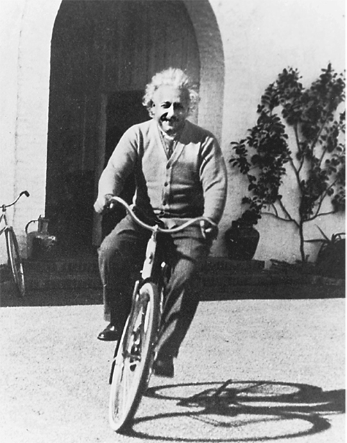

Cách Isaacson viết về công trình khoa học của Einstein thật tuyệt vời: chính xác, đầy đủ và ở mức chi tiết phù hợp với độc giả bình dân. Tận dụng sự phong phú của nguồn tài liệu lịch sử mới được công bố gần đây, ông đã viết ra cuốn tiểu sử đáng đọc nhất về Einstein.
— A. Douglas Stone, Giáo sư vật lý tại Đại học Yale
Là kết quả của việc nghiên cứu kỹ càng và được viết rất lôi cuốn, cuốn sách này đã làm được một việc tuyệt vời là tóm tắt các khái niệm đằng sau những học thuyết của Einstein… Isaacson cũng đã xuất sắc nêu bật các nét tính cách của Einstein.
— Dennis O’Brien, The Baltimore Sun
Isaacson đưa chúng ta đến với một cuộc đời, chứ không đơn thuần là đến với một trí tuệ, mà có lẽ là cuộc đời vĩ đại nhất của thế kỷ XX; không chỉ có vậy, [ông còn cho thấy] đó còn là một nhân cách cũng bất toàn và có lúc sai lầm như tất cả chúng ta. Sự kết hợp độc đáo giữa tài hoa tuyệt đỉnh và tính thất thường của con người vĩ đại đó đã đưa cuốn tiểu sử này vào hàng những cuốn tiểu sử xuất sắc của thời đại.
— Joseph J. Ellis, tác giả của cuốn Founding Brothers: The Revolutionary Generation [Những người anh em lập quốc: Thế hệ cách mạng]
Isaacson có một biệt tài thú vị là thể hiện được chất thơ của vật lý... Cực kỳ hấp dẫn.
— Susan Larson, The Times-Picayune (New Orleans)

---❊ ❖ ❊---
Santa Barbara, năm 1933
Sống ở đời cũng giống như đi xe đạp vậy,
để giữ thăng bằng con phải đạp không ngừng.
— ALBERT EINSTEIN, TRONG THƯ GỬI CON TRAI EDUARD —
NGÀY 5 THÁNG HAI NĂM 1930